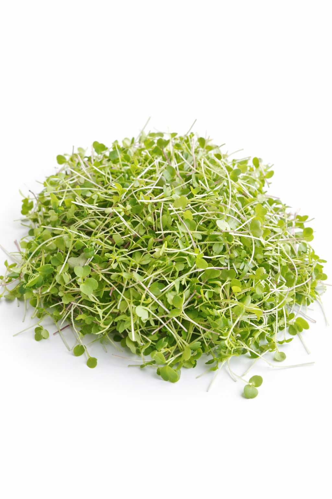
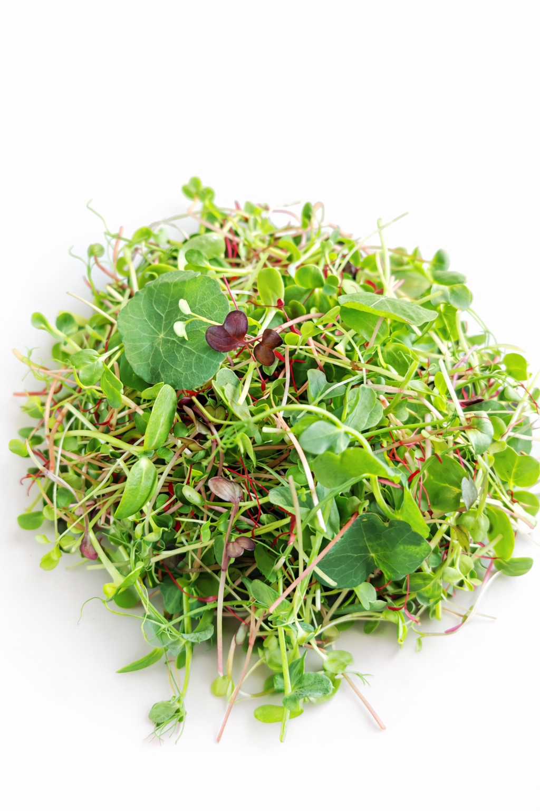

Eifel Greens
Unsere drei Mixes
Jeder Mix sorgfältig zusammengestellt für unterschiedliche Geschmäcker und Anwendungen – für Restaurants, Handel und Zuhause.
Aroma Mix
Kräftig & würzig
Geschmacksprofil
Drei Sorten Radieschen-Microgreens – grün, pink und violett – vereinen sich zu einem lebhaften, würzigen Mix mit leicht pfeffriger Schärfe und frischer Note. Die unterschiedlichen Sorten bringen nicht nur Geschmack, sondern auch faszinierende Farbe auf jeden Teller.
Passt zu
Erhältlich als
Für die Gastroküche
Gramm individuell anpassbar
Handelspackung
40 g
Privatpackung
40 g

Gourmet MixGourmet Mix
Fein & elegant
Geschmacksprofil
Eine raffinierte Komposition aus Rucola, Rotkohl, Kohlrabi und Brunnenkresse. Der Rucola bringt eine elegante Pfeffernote, Kohlrabi eine zarte Süße, während Brunnenkresse und Rotkohl frische Würze und intensive Farbe beisteuern – ein Mix für die anspruchsvolle Küche.
Passt zu
Erhältlich als
Für die Gastroküche
Gramm individuell anpassbar
Handelspackung
20 g
Privatpackung
20 g

Vital MixVital Mix
Der nährstoffreichste Mix
Geschmacksprofil
Unser reichhaltigster Mix vereint drei Radieschen-Sorten, Erbsen, Sonnenblumen, Amaranth, Brokkoli und Kapuzinerkresse. Erbsen und Sonnenblumen geben eine nussig-milde Basis, Brokkoli und Amaranth liefern Power-Nährstoffe, Kapuzinerkresse sorgt für lebendige Würze und leuchtende Farbtupfer.
Passt zu
Erhältlich als
Für die Gastroküche
Gramm individuell anpassbar
Handelspackung
50 g
Privatpackung
50 g
Qualität, die man schmeckt
Regional & unbehandelt
Alle Mixes werden in unserer Produktion in der Eifel angebaut – vollständig unbehandelt und ohne Pestizide.
Wöchentlich frisch geerntet
Wir ernten und liefern wöchentlich – so garantieren wir maximale Frische und optimalen Geschmack.
Für jede Küche
Ob Profiküche, Einzelhandel oder Zuhause – unsere Mixes passen zu jedem Anlass und jeder Küche.
Interesse an unseren Mixes?
Wir freuen uns über Ihre Anfrage – egal ob Restaurant, Handel oder Privatkunde.